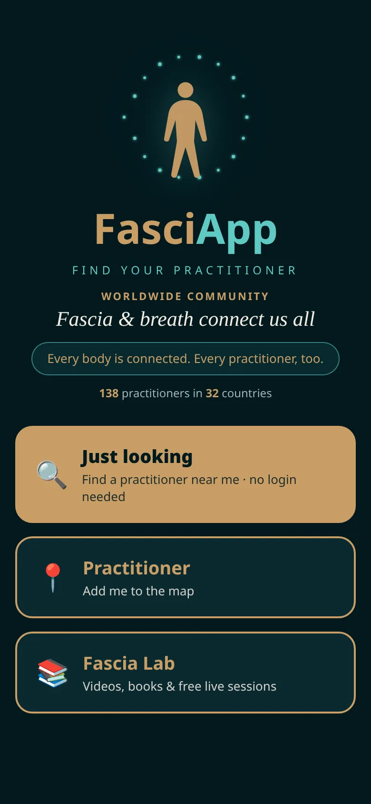
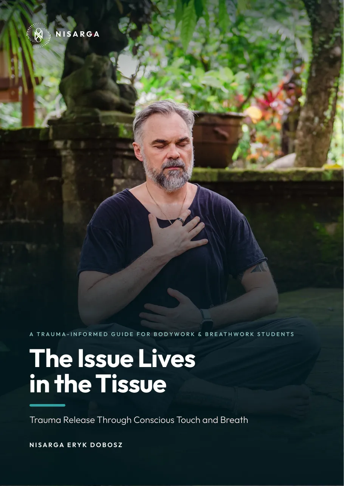

FasciApp Webinar:
Fascia Connects Us All
Free · 60 minutes · live on Zoom
Our mission: fascia and breath connect us all.
🎁 Free 50-page ebook for all attendees
A free live hour with FasciApp about the living web inside you: what fascia is, how it links your whole body, and how to feel it, read it and care for it.
Save my free spot

In this hour
Feel your fascia from the inside, gently and slowly.
What fascia is, how it links the whole body, and what's new in FasciApp.
Fascia and breath connect us all. 138 practitioners in 32 countries have already joined the FasciApp network.
What is fascia?
Because fascia is continuous, tension in one area can be felt somewhere else. Tight hips can pull on the lower back; a stiff neck can relate to the shoulders and jaw.
Fascia contains many sensory receptors. It helps you sense position, movement and the inner state of your body, so it plays a big part in body awareness.
Under stress we brace, hold our breath and tighten. Over time these patterns can leave the tissue feeling stiff and restricted. Gentle touch, breath and movement help it soften again.
Healthy fascia glides and adapts. Hydration, varied movement, rest and mindful touch all support how freely and comfortably you move.
General educational information, not medical advice. For pain or health concerns, please see a qualified professional.
In this webinar
The body-wide web, and how it links body, breath and how we feel.
How stress and old experiences are held in the body.
A live look at the body reading scan and other new features.
Bring your questions.
🌿 Guided meditation
We close with a short guided meditation to feel your fascia from the inside. Just bring a comfortable place to sit or lie down.
The Issue Lives in the Tissue
Trauma Release Through Conscious Touch and Breath · 50-page ebook (PDF)
A trauma-informed guide by Nisarga Eryk Dobosz for bodywork and breathwork students, and anyone curious about how experience is held in the body. It is honest about what research supports, what is still debated and where we use metaphor.
- Understanding trauma: what trauma really is, how it may live in the body and the fascia, and the nervous system: fight, flight, freeze and the window of tolerance
- The two doorways: trauma-informed touch, the breath and trauma, and combining touch and breath in a session
- Safety and integration: consent and scope of practice, when someone is overwhelmed or dissociates, release and integration, and self-care for the practitioner
With short "Try this" practices, reflection questions, key takeaways, science corners and sources. Educational, not medical or psychological advice.
Sent by email after the webinar to everyone who signs up.
Your host
Creator of FasciApp · 25 years of bodywork · breathwork since 2009.
Reserve your free spot
Wednesday, 25 November 2026 · 19:00 Warsaw (CET) · 20:00 Tallinn
FAQ
Is it really free?
Yes, completely free.Will there be a recording?
No, this is a live-only event, so join us on the night.Do I need experience?
No. Everyone is welcome.When do I get the Zoom link and ebook?
The Zoom link comes right after sign-up, with reminders 24h and 1h before. The ebook is sent after the event.Questions?
Write to hello@fasciapp.app.© FasciApp · hello@fasciapp.app · Privacy · fasciapp.app